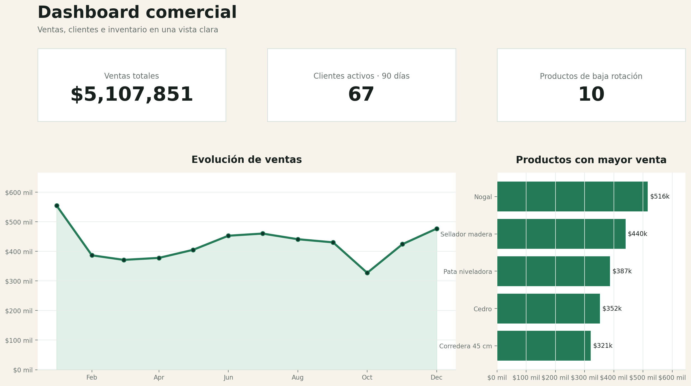
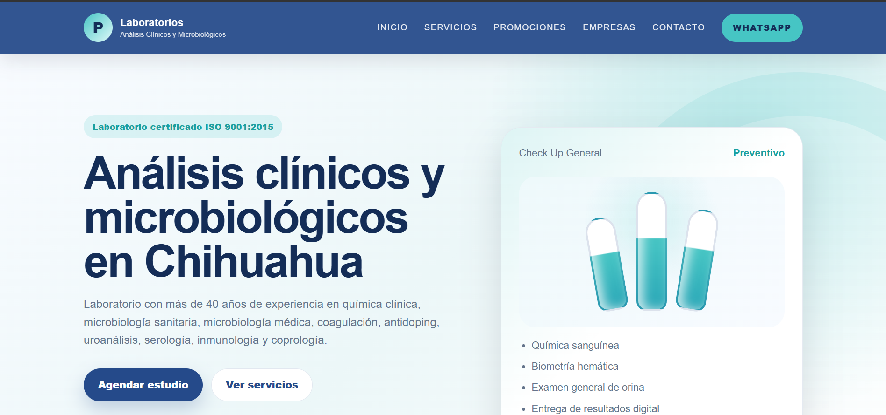
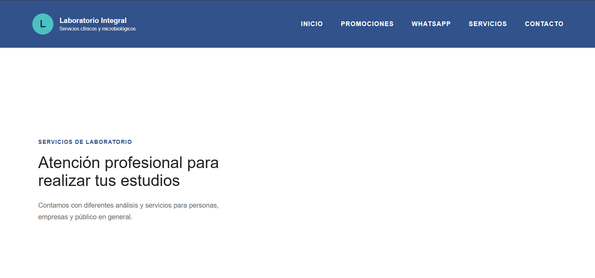
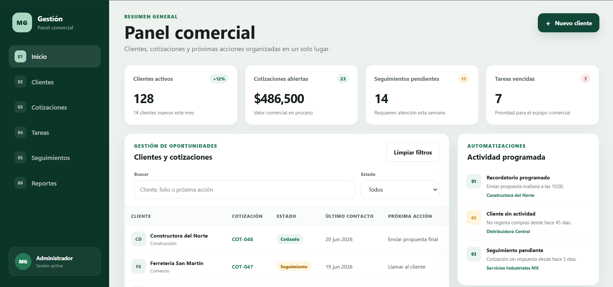

01
¿Qué productos se venden más y cuáles tienen baja rotación?
Desarrollo soluciones de software, analítica de datos y sitios web para ayudarte a entender mejor tus ventas, clientes, inventario y operación.
Preguntas que tu negocio debería poder responder
¿Qué productos se venden más y cuáles tienen baja rotación?
¿Qué clientes compran con frecuencia y cuáles dejaron de hacerlo?
¿Dónde puede haber exceso de inventario o dinero inmovilizado?
¿Qué cotizaciones o servicios necesitan seguimiento?
¿Qué tareas repetitivas podrían automatizarse?
¿Tu sitio web comunica correctamente lo que ofrece tu empresa?
Servicios
Mejorar la forma en que tu empresa organiza información, atiende clientes y comunica sus servicios.
Convierte información dispersa en reportes claros para detectar patrones, áreas de mejora y oportunidades de seguimiento.
Herramientas adaptadas a la operación real de tu empresa, sin agregar complejidad innecesaria.
Sitios claros, rápidos y adaptados a celular que comuniquen mejor tus servicios y faciliten el contacto.
Ejemplos demostrativos
Prototipos desarrollados para mostrar aplicaciones posibles en analítica de datos, diseño web y software.

Ventas, clientes, productos e inventario en una vista clara.


Comparación entre una presencia digital genérica y una propuesta con mejor jerarquía, navegación y contacto directo.

Clientes, cotizaciones, tareas y seguimientos organizados en una sola herramienta, con recordatorios y automatizaciones.
Forma de trabajo
No parto de una solución prefabricada.
El alcance se define según la operación, la información disponible y el objetivo del negocio.
Revisamos necesidades, procesos y problemas que hoy no están claros.
Definimos qué información existe, qué se puede mejorar y qué entregables tienen sentido.
Presento alcance, tiempo, costo y límites antes de iniciar.
Entrego la solución, explico resultados y planteamos los siguientes pasos.
Contacto
La primera conversación sirve para entender el problema y definir si existe una oportunidad real de mejora.